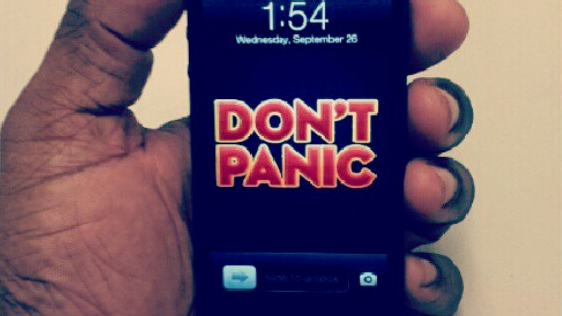

The Hitchhiker's Guide to the Galaxy is a science fiction comedy series created by Douglas Adams. Originally a radio comedy broadcast on BBC Radio 4 in 1978, it was later adapted to other formats, and over several years it gradually became an international multi-media phenomenon.
The title is the name of a fictional, eccentric, electronic travel guide, The Hitchhiker's Guide to the Galaxy, prominently featured in the series. Adaptations have included stage shows, a "trilogy" of five books published between 1979 and 1992, a sixth novel penned by Eoin Colfer in 2009, a 1981 TV series, a 1984 computer game, and three series of three-part comic book adaptations of the first three novels published by DC Comics between 1993 and 1996. There were also two series of towels, produced by Beer-Davies, that are considered by some fans to be an "official version" of The Hitchhiker's Guide to the Galaxy, as they include text from the first novel.
 Photo by allaboutgeorge
A Hollywood-funded film version, produced and filmed in the UK, was released in April 2005, and radio adaptations of the third, fourth, and fifth novels were broadcast from 2004 to 2005. Many of these adaptations, including the novels, the TV series, the computer game, and the earliest drafts of the Hollywood film's screenplay, were done by Adams himself, and some of the stage shows introduced new material written by Adams.